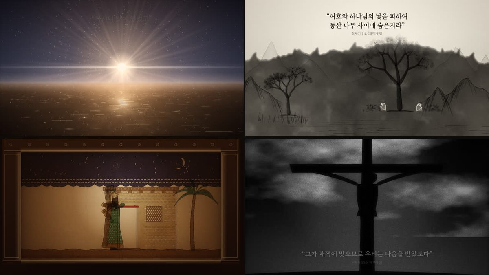
canvas-film
장면마다 화풍이 다른 시네마틱 영상을 HTML Canvas만으로 그립니다. 같은 장면 파일로 가로와 세로 MP4, 다국어 웹 플레이어를 만듭니다.
21 화풍 + 35 키트 · 11개 언어
만든 출처: jungrok5/one-scroll-bible (원본 작품 레포) · 한눈에 보는 성경 이야기 (라이브)
Claude Code 에이전트가 따르는 모션그래픽 스킬 모음입니다. 영상은 HTML Canvas 코드로 그리고, 같은 코드로 MP4를 녹화하거나 브라우저에서 재생합니다. 카드의 그림은 각 스킬로 만든 영상의 실제 장면입니다.

장면마다 화풍이 다른 시네마틱 영상을 HTML Canvas만으로 그립니다. 같은 장면 파일로 가로와 세로 MP4, 다국어 웹 플레이어를 만듭니다.
21 화풍 + 35 키트 · 11개 언어
만든 출처: jungrok5/one-scroll-bible (원본 작품 레포) · 한눈에 보는 성경 이야기 (라이브)
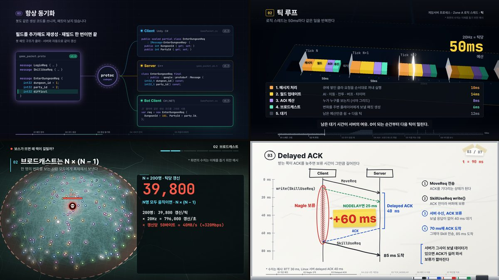
파이프라인, 프로토콜, 서버 루프 같은 기술 과정을 60–110초 설명 영상으로 그립니다. 주제마다 영상, 설명, 용어집 페이지와 MP4를 만듭니다.
12 주제 · 설명 방식 7가지
만든 출처: jungrok5/mmo-server-explained (원본 작품 레포) · MMO 서버 설명 영상 (라이브)
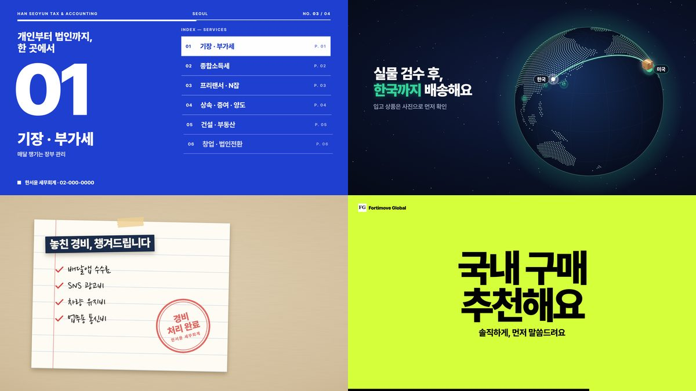
회사 사이트나 블로그를 읽고 15–40초 홍보 영상을 가로와 세로 MP4로 만듭니다. ElevenLabs 내레이션 · 효과음 · 배경음악을 넣고, 영상마다 원샷 프롬프트를 남깁니다.
9 스타일 · 고객 2곳
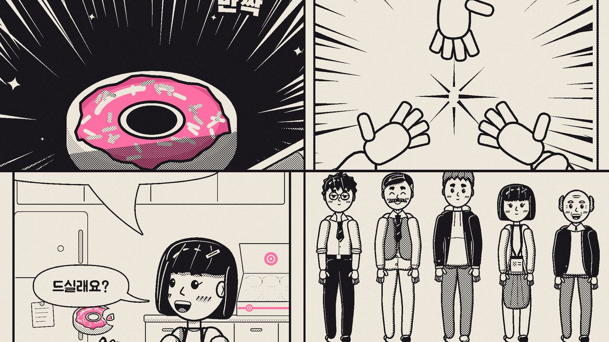
세로로 스크롤되는 무빙툰을 HTML Canvas로 그립니다. 데이터로 정의한 캐릭터, 관절을 검사한 몸, 흑백 망가 인쇄 마감, ElevenLabs 내레이션과 효과음으로 9:16 MP4와 브라우저에서 도는 장면 페이지를 만듭니다.
3장면 · 74초 · 캐릭터 5명
이 레포에서 만듦: motion-webtoon/examples/donut/
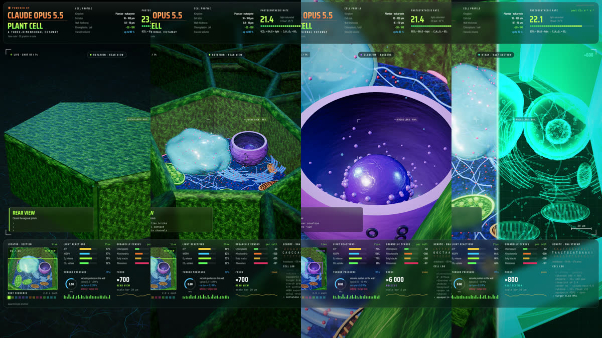
세포, 씨앗, 배터리 같은 표본 하나를 잘라 연 3D 모델로 만들고, 부분마다 카메라가 돌며 들어가는 9:16 쇼츠를 만듭니다. SF 계기판 HUD를 얹어 MP4와 브라우저에서 도는 페이지로 냅니다.
14샷 · 28초 · 3D + 2D 키트
이 레포에서 만듦: specimen-tour/examples/plant-cell/
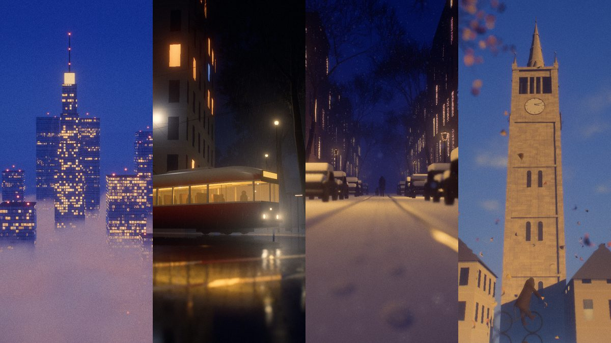
비 오는 밤거리, 눈 덮인 골목, 안개에 잠긴 도시, 웅덩이에 비친 시계탑 같은 시네마틱 3D 장면을 three.js로 만듭니다. 젖은 반사, 안개와 가로등 빛, 피사계 심도, 필름 그레인으로 렌더 같은 9:16 MP4와 브라우저에서 도는 샷 페이지를 만듭니다.
4샷 · 25.6초 · 날씨 4가지
이 레포에서 만듦: cinematic-3d/examples/four-weathers/
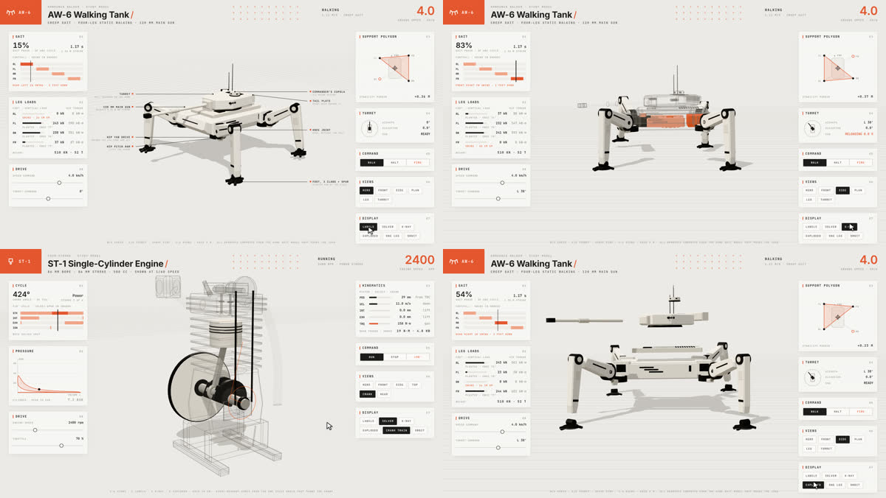
보행 전차나 엔진 같은 기계를 three.js 코드로 짓고, 부품을 움직이는 같은 모델에서 계산한 계기판과 라벨 · X-ray · 분해도 · 부품 분리 모드를 갖춘 인터랙티브 3D 시뮬레이터 페이지를 만듭니다. 커서가 버튼을 누르는 투어는 16:9 MP4로 굽습니다.
예제 2개 · 보행 전차 · 엔진 · 표시 모드 6가지
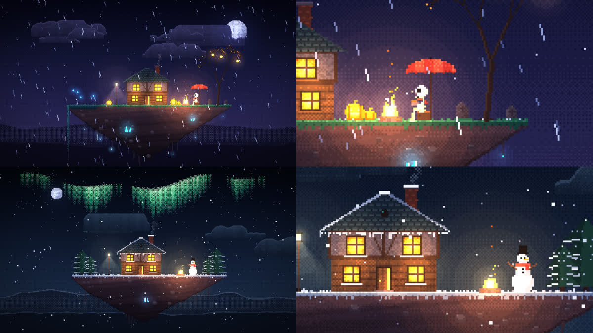
비 오는 밤의 떠 있는 섬처럼 아늑한 픽셀아트 장면을 이미지 파일 없이 코드로 그리고, 끊김 없이 반복되는 루프 영상으로 만듭니다. 빗줄기, 번개, 불티, 연기, 깜박이는 창문 불빛으로 1080p MP4 한 바퀴와 10시간 로파이 영상을 냅니다.
예제 2편 · 60초 · 40초 · 소품 28종
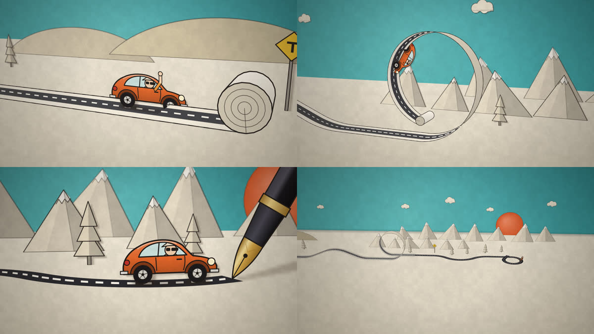
장난감 자동차가 바로 앞에서 만들어지는 종이 길을 달리는 페이퍼 크래프트 스톱모션 영상을 이미지 파일 없이 코드로 그립니다. 종이 두루마리가 길을 펼치고 만년필이 잉크로 길을 그리는 동안 종이 산이 접혀 올라오고, 1080p MP4와 브라우저에서 도는 페이지를 냅니다.
예제 30초 · 6박자 · 종이 길 + 잉크 길
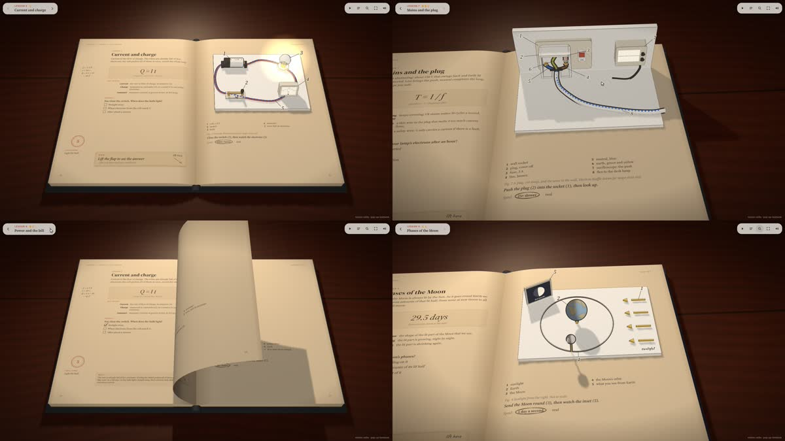
책상 위 스탠드 불빛 아래 펼친 책 한 권으로 수업 하나를 펼침면에 담는 인터랙티브 3D 교과서를 three.js로 만듭니다. 왼쪽은 공식 · 핵심어 · 예측 문제 · 들춰 보는 답, 오른쪽은 펜화처럼 빗금 친 팝업 디오라마이고, 커서 투어는 16:9 MP4로 굽습니다.
예제 2권 · 수업 5개 · 책장 넘김 · 돋보기 · 들춰 보는 답
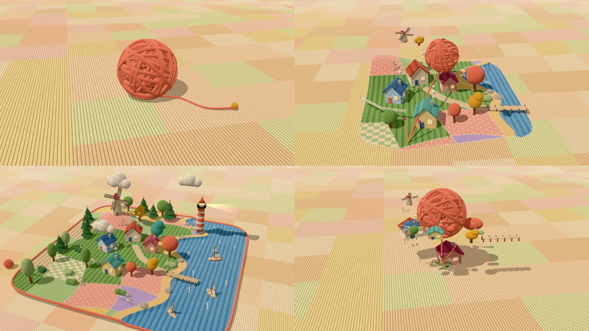
밭, 바다, 지붕, 나무까지 모두 털실로 뜬 작은 세상을 three.js로 만들고, 그 세상이 털실 공에서 떠져 나오는 영상을 만듭니다. 실 끝을 당기면 공이 떠올라 돌며 바깥으로 세상을 뜨고, 소품이 공에서 튀어나오며, 다시 풀려 공으로 돌아가는 1080p MP4와 브라우저에서 도는 페이지를 냅니다.
예제 20초 루프 · 뜨개 질감 8가지 · 소품 14종
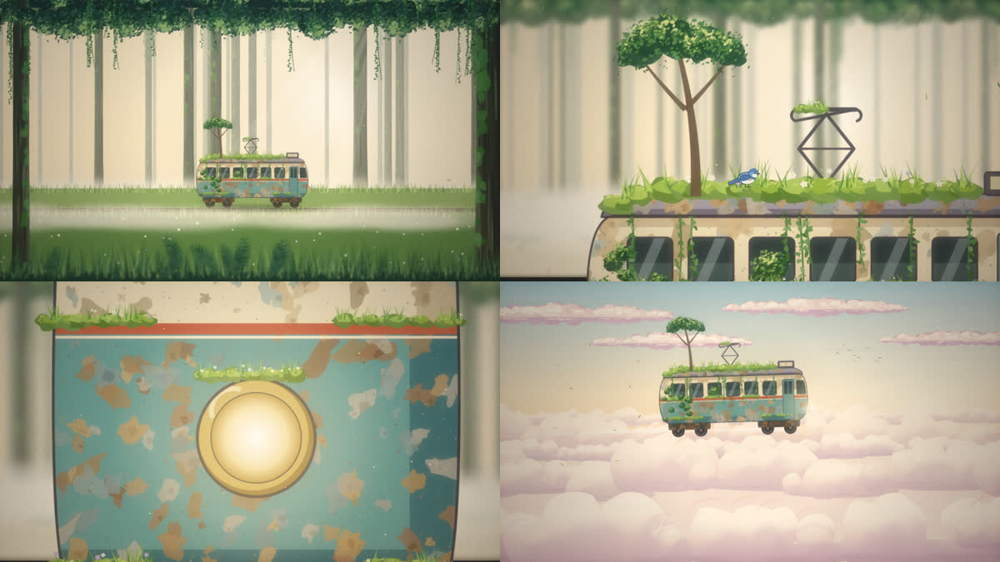
주제 하나를 주면 손그림 애니메이션 배경풍 단편 영화를 코드만으로 만듭니다. 붓 터치로 칠한 새벽 하늘과 안개 숲, 이끼와 녹이 앉은 주인공, 파랑새, 빛줄기와 낙엽을 멀티플레인 카메라로 찍고, 코드로 합성한 음악과 효과음을 붙인 1080p MP4와 브라우저에서 도는 페이지를 냅니다.
예제 48초 · 8샷 · 샷 문법 8박자
만든 출처: chetaslua의 X 게시물 (영상과 프롬프트) · ChetasLua/moss-keeper (그 결과물)
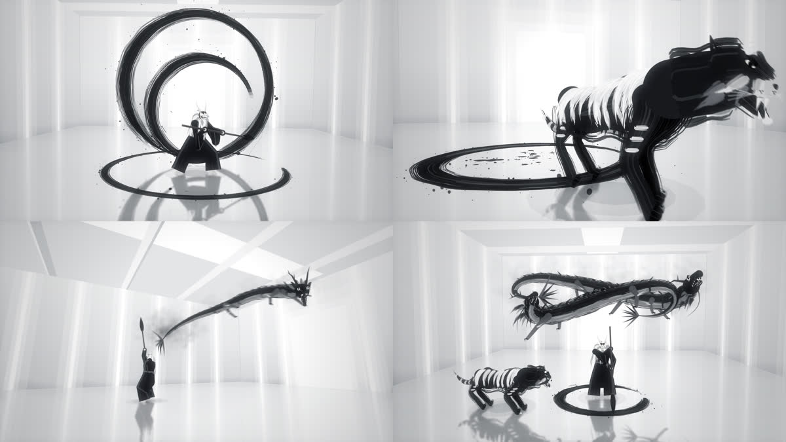
주제 하나를 주면 가면 쓴 무사가 하얀 스튜디오에서 거대한 붓을 휘두르고, 허공에 남은 먹 획이 호랑이와 용 같은 먹의 짐승으로 살아나는 액션 단편을 코드만으로 만듭니다. 바닥 반사, 마른 붓 결, 먹 연기, 모션 블러, 코드로 합성한 북소리를 붙인 1080p MP4와 브라우저에서 도는 페이지를 냅니다.
예제 21초 · 10샷 · 짐승 프리셋 6종
주제를 주면 그 주제에 맞는 움직이는 캐릭터 · 색 · 배경 · 음악 · 문구를 새로 설계해, 링크 하나로 보내는 홀로그램 티켓 초대장을 만듭니다. 봉투를 열면 티켓이 튀어나와 기울일 때마다 포일이 빛나고, 뒤집으면 엽서가 나오며, 참석 회신 · 캘린더 추가 · 음악이 붙습니다. 만들기 페이지, QR 공유 이미지, 16:9 · 9:16 MP4를 냅니다.
예제 졸업 초대장 · 새 테마 · 기본 테마 6종 · 3개 언어
만든 출처: KanaWorks_AI의 X 게시물 (しあわせパス)
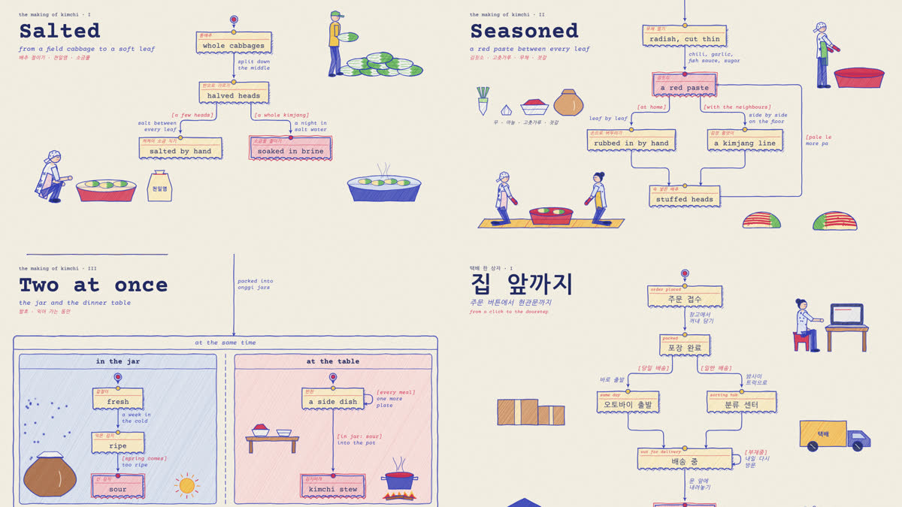
주제 하나를 주면 그 과정을 손으로 그린 상태도로 만들어, 크림색 종이 위에 코발트 잉크와 색연필로 한 단계씩 그려 나가는 설명 영상을 코드만으로 만듭니다. 갈래와 되돌아가는 고리, 동시에 바뀌는 두 영역, 옆에서 일하는 사람들의 그림, 재생 바와 자막을 붙인 MP4와 브라우저에서 도는 페이지를 냅니다.
예제 46초 · 3장 20단계 · 소품 36종
만든 출처: ann_nnng의 X 게시물 (향 만드는 과정 상태도) · kevin_t_ngo의 X 게시물 (버블티 가게 상태도)
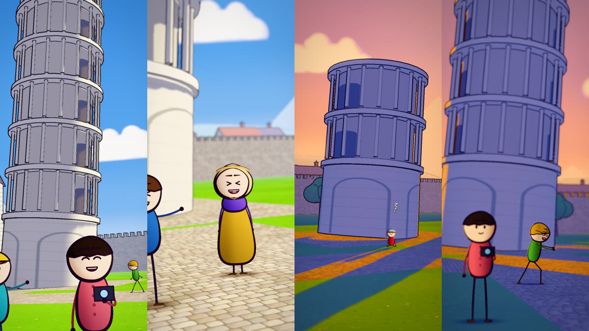
주제 하나를 주면 납작한 2D 만화 캐릭터가 잉크 외곽선을 두른 3D 마을에서 움직이는 1분짜리 세로 애니메이션 쇼츠를 코드만으로 만듭니다. 황당한 사실로 시작해 "You see"로 원리를 풀고 반전으로 끝나는 대본, ElevenLabs 내레이션, 단어에 맞춘 샷, 코드로 합성한 음악과 효과음을 붙인 MP4와 브라우저에서 도는 페이지를 냅니다.
예제 62초 · 19샷 · 조명 프리셋 4종
만든 출처: mromidev/claude-animated-shorts (원본 스킬, MIT) · X 게시물 (소개)
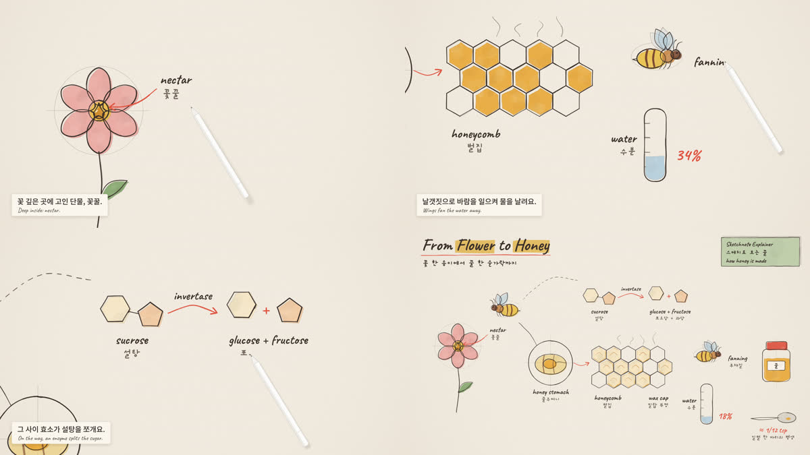
주제 하나를 주면 아이패드에 스케치하듯 그림 하나씩 그려 가며 설명하는 지식 영상을 코드만으로 만듭니다. 크림색 종이 위의 연필선과 살짝 어긋난 수채 채색, 손글씨 라벨, 두 줄 자막, 그림 사이를 미끄러지는 카메라, 마지막에 한 장의 인포그래픽으로 물러나는 화면, 연필 소리와 피아노를 붙인 MP4와 브라우저에서 도는 페이지를 냅니다.
예제 69초 · 10비트 · 그림 키트 19종
만든 출처: EianLu의 X 게시물 (샤오홍슈에 맞는 지식 설명 스타일) · lemomo_ai의 X 게시물 (iPad Sketch Explainer 원본 영상)
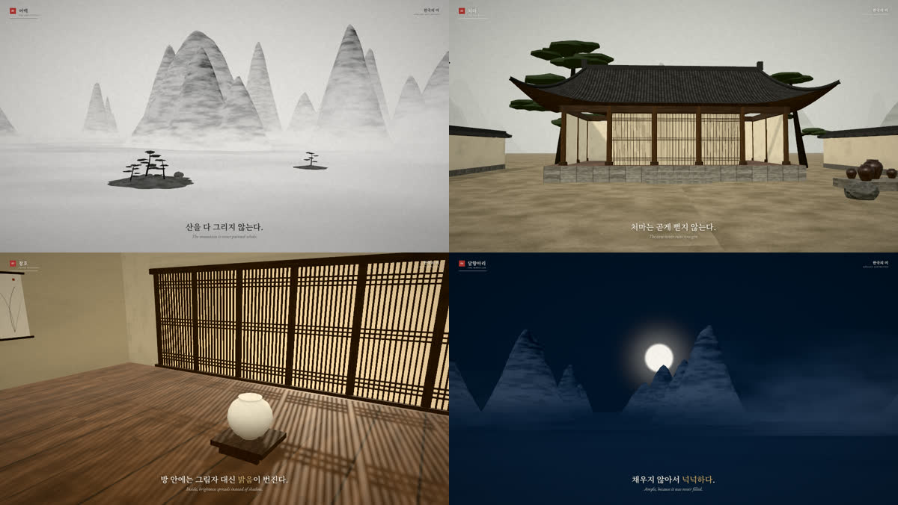
문화 · 공예 · 생각 하나를 주제로 주면, 안개 속 수묵 산수와 처마 · 창살 · 그릇을 코드로 지은 3D 세트 사이를 천천히 지나가는 장(章) 구성의 16:9 미학 에세이 영상을 만듭니다. 장 배지, 한 글자씩 쓰이는 두 언어 자막, 설명 라벨, 합성한 음악, 낙관을 찍은 제목 카드까지 3D 에셋 없이 그려 MP4와 브라우저에서 도는 페이지로 냅니다.
예제 58초 · 4장 · 조명 프리셋 7종
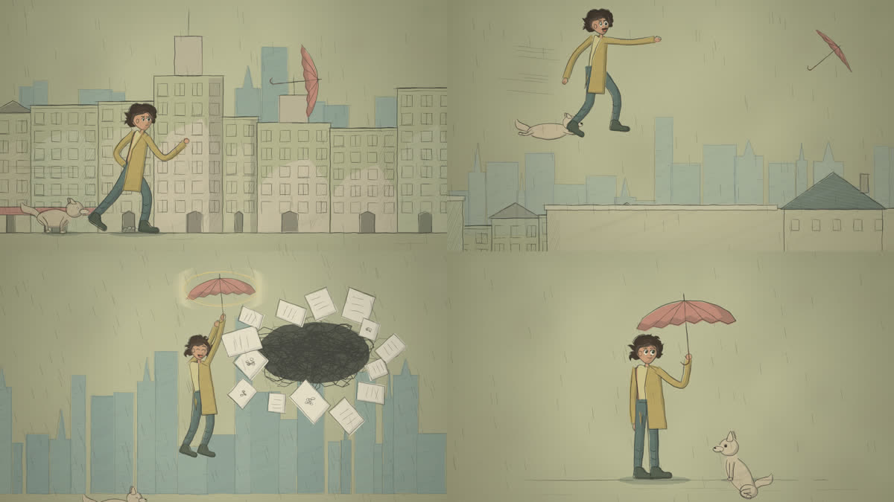
주제 하나를 주면 거친 연필 선과 탁한 색, 미완성 느낌의 스케치 카툰 단편을 코드만으로 만듭니다. 빈 종이에 그려지며 시작해 다시 빈 종이로 돌아오는 이야기, 끓는 선, 선에서 살짝 비껴 칠한 색, 다리가 긴 캐릭터, 코드로 합성한 음악과 효과음을 붙인 1080p MP4와 브라우저에서 도는 페이지를 냅니다.
예제 35.5초 · 8샷 · 표정 13종
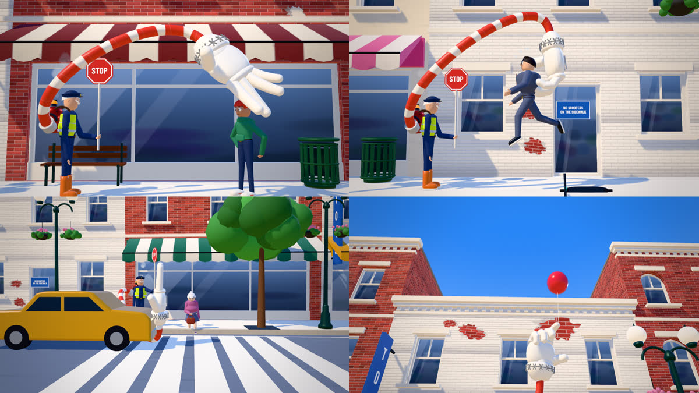
주제 하나를 주면 무표정한 주인공이 햇살 좋은 거리를 걷는 동안 고무호스 팔 끝의 거대한 장갑이 동네의 작은 골칫거리를 하나씩 해결하는 대사 없는 개그 단편을 코드만으로 만듭니다. 칠한 벽돌 거리, 관절이 있는 장갑, 표정이 있는 캐릭터, 코드로 합성한 그루브와 효과음, 말장난 제목을 붙인 1080p MP4와 브라우저에서 도는 페이지를 냅니다.
예제 27.5초 · 개그 5개 · 손 모양 22가지
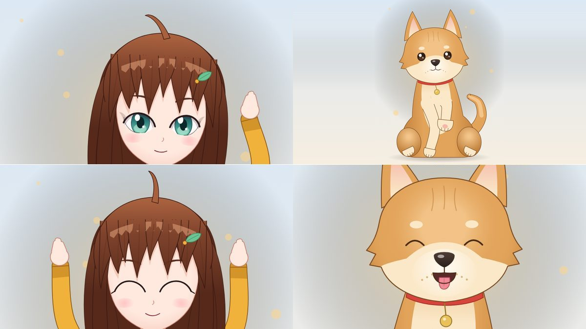
주제 하나를 주면 숨 쉬고, 깜빡이고, 포인터를 눈으로 먼저 따라가고, 머리카락·귀·꼬리·끈이 스프링으로 흔들리는 2.5D 캐릭터를 사람이든 동물이든 코드로 새로 설계합니다. 팔다리는 관절 한계 안에서 손을 흔들고 앞발을 내밀며, 한글 립싱크로 말합니다. 라이브 페이지, 한 파일 HTML, 캐스트 시트, MP4를 냅니다.
예제 2개 · 사람 · 강아지 · 120 Hz 결정적 시뮬레이션
만든 출처: yeko의 X 게시물 (LivLiv Player 공개) · livliv-dev/player (Apache-2.0)
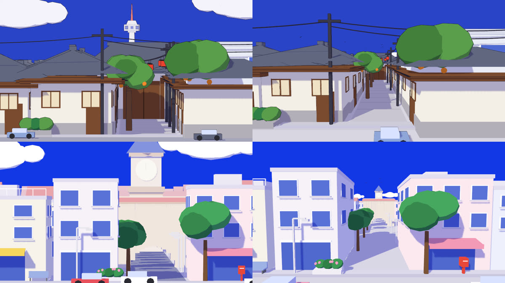
주제 하나를 주면 망원 렌즈로 보면 한 장의 평면 그림 같은 3D 거리를 만들고, 돌리 줌으로 그 틈을 열어 숨은 골목과 먼 랜드마크를 드러냈다가 매 박자 다시 평면으로 돌아오는 8초 루프 영상을 코드만으로 만듭니다. 파스텔과 잉크 외곽선 두 가지 마감, 모션 블러, 카메라 움직임에 맞춘 휙 소리와 비트를 붙인 MP4와 라이브 페이지를 냅니다.
예제 · 템플릿 2개 · 시점 7가지 · 마감 2가지
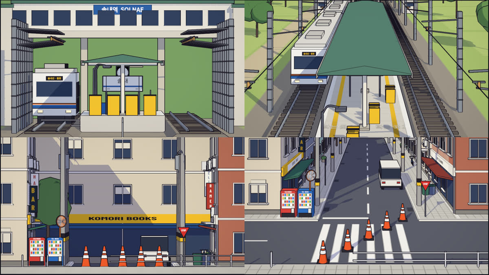
주제 하나를 주면 거리 · 승강장 · 통로처럼 긴 축이 있는 장소를 선화 일러스트 3D로 짓고, 망원 렌즈로 한 장의 평면 그림처럼 보이게 했다가 돌리 줌과 코너 시점으로 입체를 드러내는 10초 루프를 코드만으로 만듭니다. 평면일 때 몰래 깊이를 바꾼 물건이 줄에서 대각선으로 드러나고, 잉크 선 · 두 단계 음영 · 그림자 해칭 · 모션 블러를 갖춘 MP4와 라이브 페이지를 냅니다.
예제 · 템플릿 2개 · 샷 8가지 · 패스 3개
만든 출처: dotslashsimran/simcraft의 perspective-illusion 스킬 (SKILL.md)
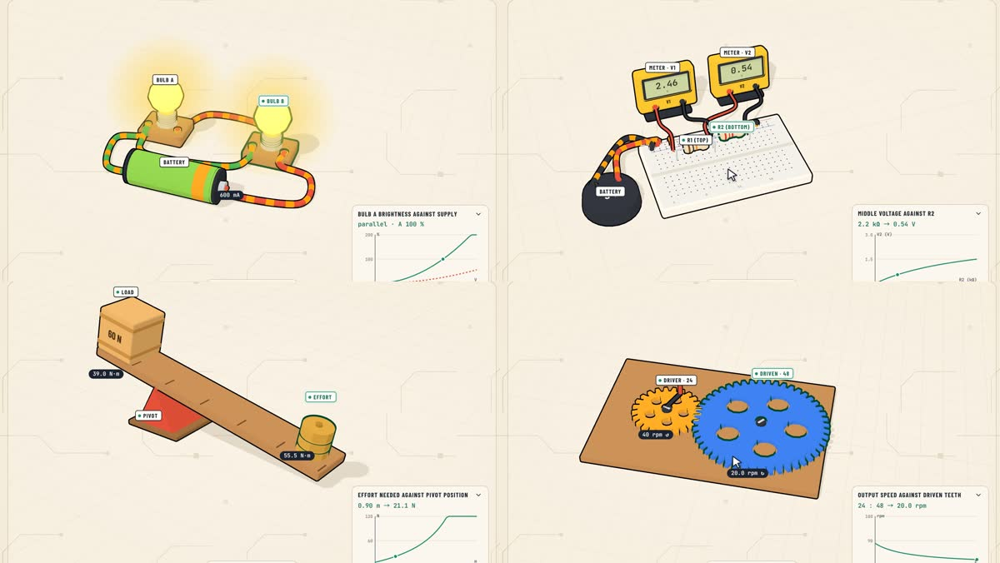
주제 하나를 주면 장난감 같은 3D 실험대를 켜고 부품을 하나씩 바꿔 보는 실습 레슨 앱을 새로 설계합니다. 실험대와 늘 같은 값을 보여 주는 회로도 · 힘 그림, 실시간 그래프, 지금 숫자가 들어간 수식, 해 보기 목표, 여러 언어를 갖추고, 커서 투어는 1080p MP4로 굽습니다.
예제 2개 · 회로 101 · 기계 101 · 레슨 9개 · 영어 · 한국어
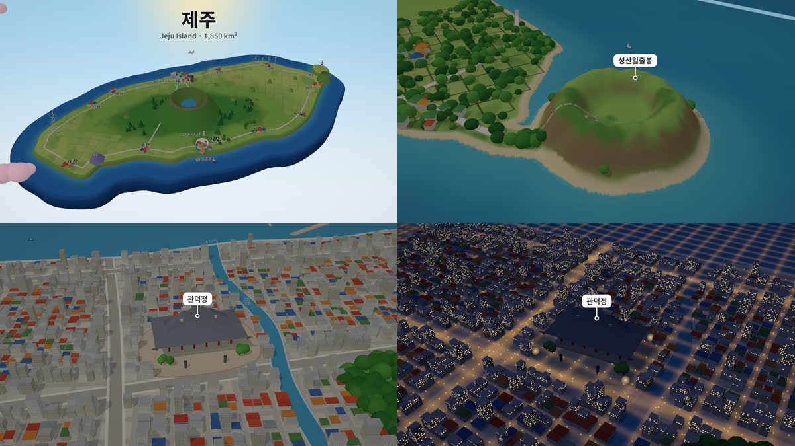
장소 하나를 주면 그 지역을 하늘에 뜬 두툼한 장난감 지도로 만들고, 카메라가 지도 속으로 다이브해 해안 · 폭포 · 도시 같은 근접 장면을 보여 준 뒤 다시 떠오르는 3D 지도 영상을 three.js로 만듭니다. 지도 위에 누운 지명, 큼직한 랜드마크 미니어처, 핀 라벨, 밤이 내린 도시까지 담은 1080p MP4와 브라우저에서 도는 페이지를 냅니다.
예제 30초 · 장면 3개 · 소품 19종
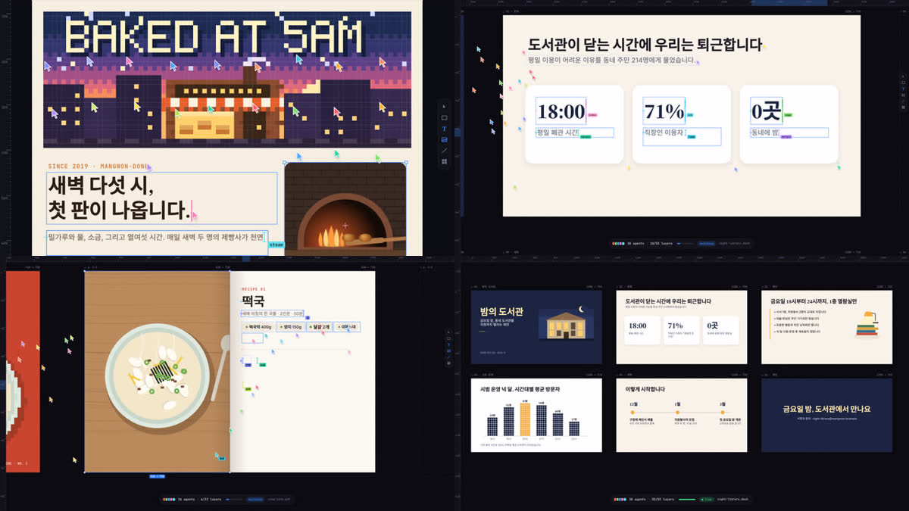
주제 하나나 기존 파일(PPTX · PDF)을 주면 웹사이트, 발표 장표, 책, 포스터 무엇이든 새로 설계하고, 어두운 디자인 에디터에서 색색의 커서 수십 개가 박스를 끌어 그리고, 글을 타이핑하고, 사진 파일을 끌어다 놓고, 픽셀 표지와 차트를 한 칸씩 칠해 함께 완성하는 영상을 코드만으로 만듭니다. 긴 페이지는 스크롤하고 장표와 펼침면은 한 장씩 패닝하며, 마지막엔 게시되며 전체로 줌아웃합니다. 효과음을 합성한 MP4와 라이브 페이지를 냅니다.
예제 3개 · 웹 · 장표 · 책 · PPTX · PDF → 초안 빌드
만든 출처: AlexZ의 X 게시물 ("Computer use 需要进化到鼠标集群") · harshit의 X 게시물 (Craziest Website Reveal ever, 원본 영상)
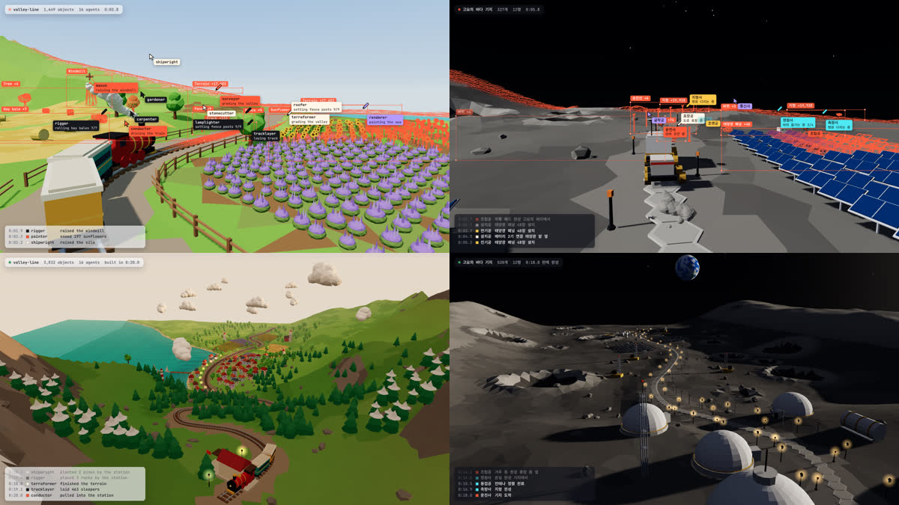
주제 하나를 주면 이름표를 단 커서 크루가 기차나 로버 바로 앞에서 로우폴리 3D 세계를 지어 나가는 영상을 three.js 코드만으로 만듭니다. 물건마다 산호색 와이어프레임으로 솟았다가 커서가 닿으면 완성되고, 태그는 하는 일을, 로그는 끝낸 일을 적으며, 마지막엔 카메라가 떠올라 완성된 세계를 봅니다. 라이브 페이지와 효과음을 합성한 MP4를 냅니다.
예제 2개 + 템플릿 · 한국어 크루 · 로그
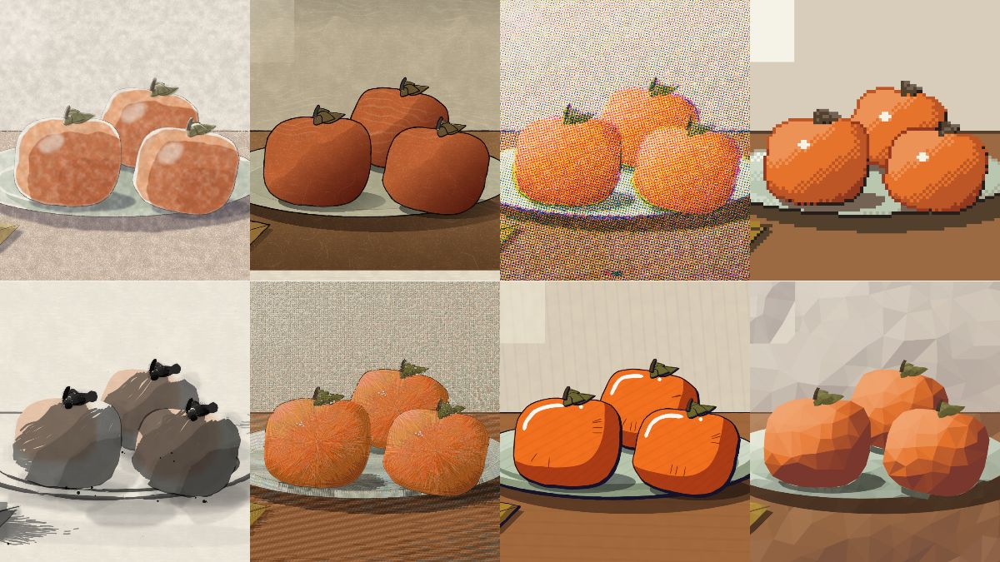
32가지 손그림 화풍(연필 수채화, 우키요에 목판화, 리소그래프, 수묵화, 자수, 장난감 블록, 픽셀 아트…) 가운데 하나를 골라 계속 재사용합니다. 주제를 화풍 없는 장면으로 한 번 적으면 고른 화풍이 자기 재료와 순서로 스틸과 그려지는 과정 영상을 만들고, 고른 화풍은 하우스 스타일로 저장돼 다음 그림도 같은 손으로 그립니다.
32 화풍 · 6계열 · 예제 2개 · 감 · 주전자
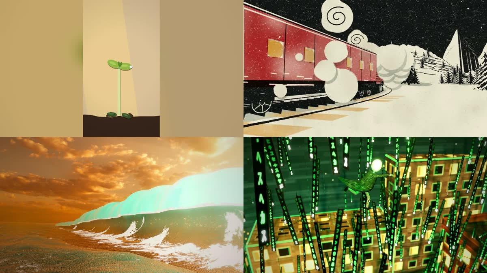
아이디어 · 제품 · 노래 · 참고 영상을 주면 사용자와 함께 질문, 제작 카드, 스틸, 절반 크기 초안, 두 번의 수정을 거쳐 코드로만 만든 단편 영화 · 애니메이션 · 광고 · 뮤직비디오를 −14 LUFS MP4로 내놓습니다. Quick 모드는 HTML 한 파일에 그림과 소리를, Film 모드는 여섯 단계 승인과 three.js 렌더를 씁니다.
2 모드 · 58 스타일 레시피 · 예제 · First Sprout 12초
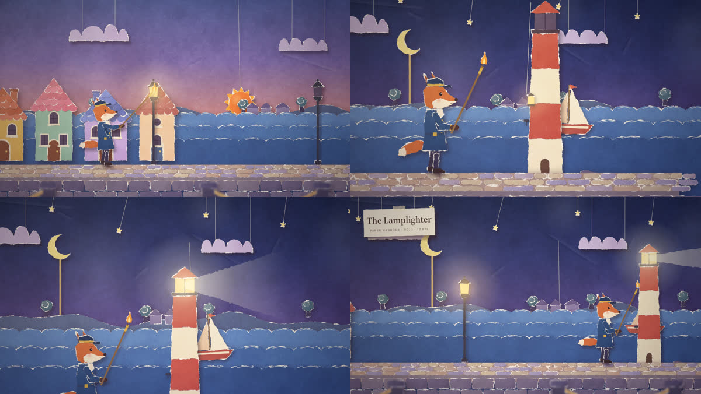
주제 하나를 주면 종이를 오리고 찢어 만든 무대에서 컷아웃 인형이 작은 심부름을 하는 단편 애니메이션을 만듭니다. 종이 부품은 이미지 생성 모델(GPT 이미지)로 그려 잘라 쓰거나 코드로 오려 만들고, 움직임은 늘 코드라서 원하는 대로 고치고 다시 만들 수 있습니다. 초당 12장으로 끊기는 움직임, 실에 매달린 해와 막대에 꽂힌 달, 종이 제목표, 코드로 합성한 오르골 음악을 붙인 1080p MP4와 브라우저에서 도는 페이지를 냅니다.
예제 20.2초 · 3샷 · 부품: 이미지 모델 또는 코드
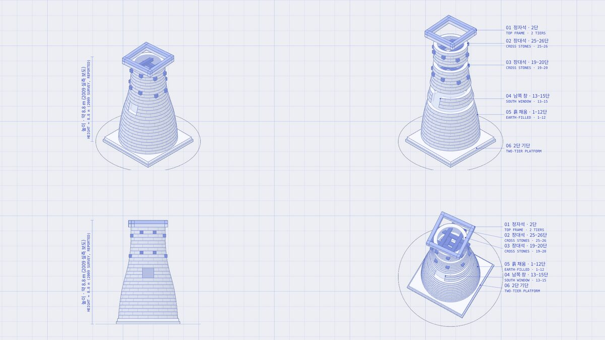
문화유산 하나를 주면 실사진·실측 도면·기록을 조사해 근거 장부를 쓰고, 그 건축물만의 부재를 새로 설계해 청사진 종이 위에서 돌려 보고 부재별로 펼쳐 보는 3D 모형을 만듭니다. 모든 형태와 치수에 실측·보도·사진 추정·미상 표시를 붙이고, 한국어(또는 중국어)와 영어 주석, 모서리 입면도, 근거 장부를 담은 오프라인 HTML 파일 하나를 냅니다.
예제 경주 첨성대 · 6개 부분 · 근거 15항목 · 한국어 페이지 약 0.47 MB
만든 출처: tanglele110-hash/heritage-blueprint-skill (원본 스킬 레포, @木渡川 · MIT)
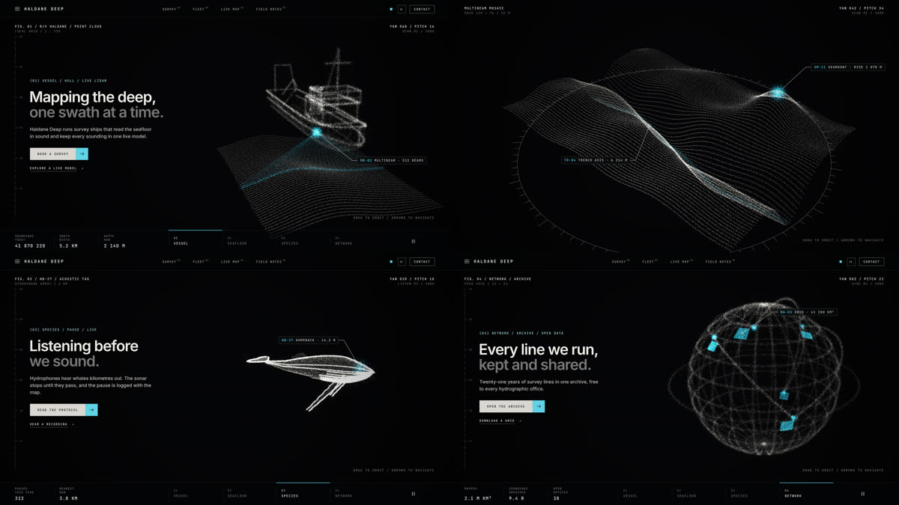
주제 하나를 주면 수십만 개의 빛나는 점이 3D 형태(건물, 배, 지형, 동물, 워드마크)를 이루고, 성운처럼 흩어졌다가 다음 형태로 다시 모이는 영상을 만듭니다. 형태는 선 · 면 · 건물 · 지형 · 회전체 · three.js 메시 · GLB · 글자로 코드에서 설계하고, 그 위에 YAW / PITCH 판독값, 3D 지점에 붙는 콜아웃, 헤드라인과 통계가 있는 사이트 화면을 얹습니다. 드래그로 돌려 보는 라이브 페이지, 합성 사운드, 1080p MP4를 냅니다.
예제 27.9초 · 형태 5개 · 점 16만 개
만든 출처: kartikey singh의 X 게시물 (AI로 만든 랜딩 페이지 모음, 앞 8초의 포인트 클라우드 섹션)
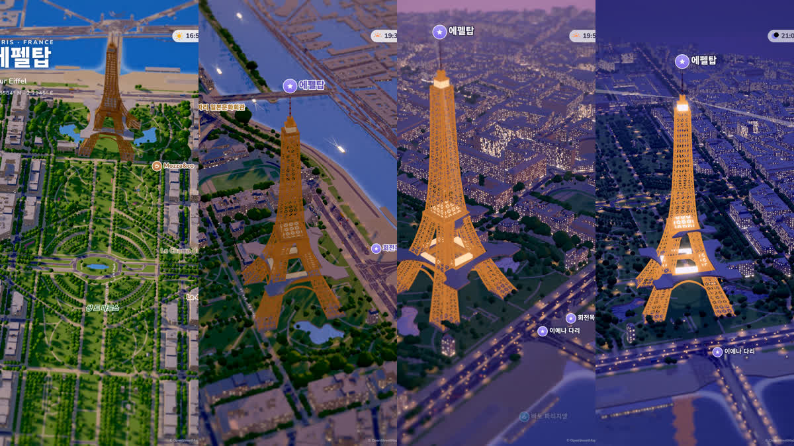
유명한 장소 하나를 주면 OpenStreetMap에서 그 동네의 실제 건물 · 길 · 강 · 공원 · 나무를 받아 귀여운 3D 지도 도시로 짓고, 랜드마크는 실제 치수로 코드에서 직접 만들어, 자동차 · 사람 · 배가 움직이고 지도 핀과 길 이름이 붙은 채 낮에서 보랏빛 밤으로 넘어가는 1080×1920 세로 영상을 만듭니다.
예제 18초 · 1080×1920 · 건물 6,533채 · 나무 11,375그루
만든 출처: Charly Delaroche의 X 게시물 (Anywhere 지도 앱: 비 오는 밤의 시부야 교차로 · 롬바드 거리 · 금문교)
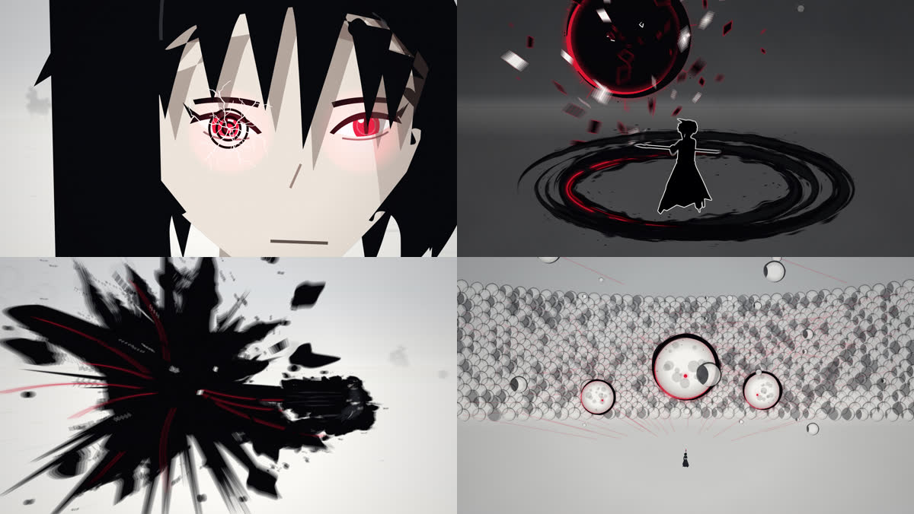
주제 하나를 주면 흑백과 붉은색 하나로 된 전투 애니메이션의 필살기 영상을 코드만으로 만듭니다. 먹물 잔상과 붉은 실선, 충격 프레임과 멈춤, 갑작스러운 정적, 하늘에 천 개가 열리는 영역, 세계를 한 줄로 베어 미끄러뜨리는 마지막 일격, 하얀 정적까지 30초 문법으로 연출한 1080p MP4와 브라우저에서 도는 페이지를 냅니다.
예제 30초 · 16샷 · 모티프 4종 · 무기 4종
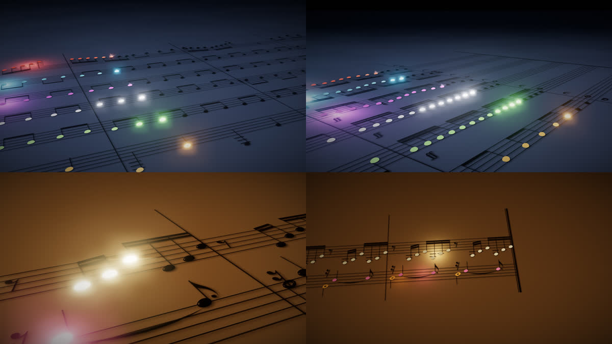
곡 하나를 주면 어둡고 안개 낀 방에 놓인 악보 위로 카메라가 낮게 미끄러지고, 음이 울리는 순간 그 음표가 성부의 색으로 빛나 종이에 빛을 드리웠다가 잔광으로 사라지는 영상을 만듭니다. 퍼블릭 도메인 곡 · MIDI · 새로 쓴 곡을 끝없는 한 줄 총보로 기보하고, 성부마다의 색 · 방의 분위기 · 음악 사건에 맞춘 샷을 설계합니다. 같은 음표에서 소리를 합성해 라이브 페이지, WAV, 1080p MP4를 냅니다.
예제 75.3초 · 바흐 1–19마디 · 템플릿 38.8초 · 오선 6줄
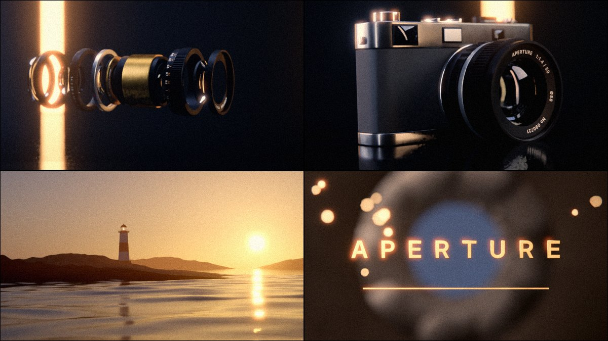
주제 하나를 주면 실사처럼 보이는 짧은 시네마틱 영상을 만듭니다. 모든 물체를 파이썬 코드로 모델링하고(3D 에셋 · 텍스처 파일 없음), 촬영 세트처럼 조명을 놓고, 실제 렌즈의 심도 · 보케 · 모션 블러로 Blender Cycles 패스 트레이싱을 한 뒤, 헐레이션 · 그레인 · 2.39:1 레터박스의 필름 룩으로 마감합니다. 매크로 속 메커니즘 → 스튜디오에서 조립되는 물체 → 그것이 쓰이는 세계 → 책상 위의 사진 → 다시 메커니즘 → 타이틀로 이어지는 스케일의 사슬을 주제마다 새로 설계하고, 합성한 사운드와 함께 1080p MP4로 냅니다.
예제 18초 · 9샷 · 432프레임 · 3D 에셋 0개 · CPU 4코어 프레임당 15–36초
만든 출처: Leon Lin의 X 게시물 (「ESCAPEMENT」, "every frame is python, no 3D assets were used")
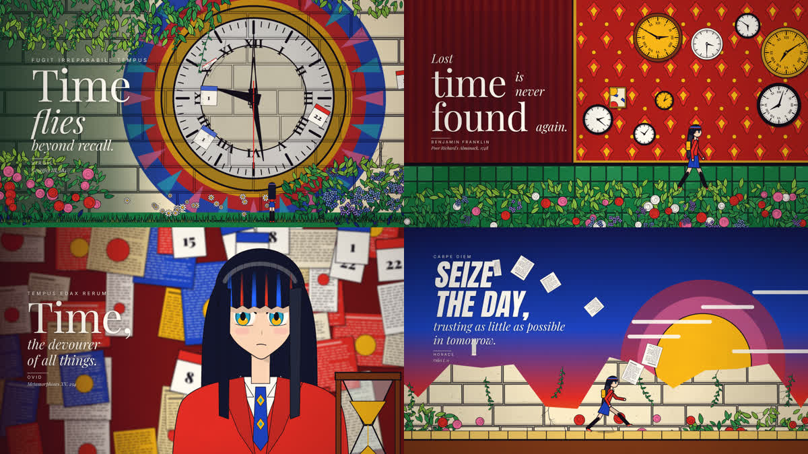
주제 하나를 주면 그 주제의 명언을 출처를 확인해 고르고, 큰 디돈 세리프 · 이탤릭 · 자간 넓은 대문자를 쌓은 흰 편집 타이포를 장면마다 새로 그린 레트로 팝 애니메이션 일러스트 위에 얹은 명언 영상을 코드만으로 만듭니다. 종이 폭풍, 갈라지는 벽, 종이 소용돌이, 잉크 홍수로 장면을 잇고 첫 장면으로 돌아와 반복되는 1080p MP4와 브라우저에서 도는 페이지를 냅니다.
예제 43.5초 · 6샷 · 전환 4종 · 글자 역할 9종
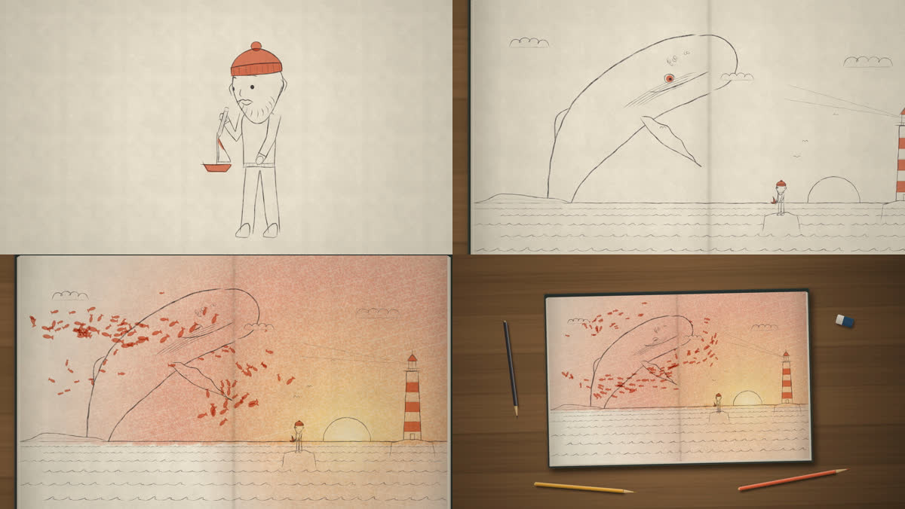
주제 하나를 주면 연필 낙서 캐릭터가 연필을 잡고 자기 세계를 그려 나가는 원테이크 단편을 코드만으로 만듭니다. 흑연 선과 한 가지 강조색, 손이 닿는 곳에서 시작해 저절로 퍼지는 세계, 큰 획 몇 번으로 그려지는 거대한 생물, 강조색 무리, 크레용 노을, 책상 위 스케치북으로 빠지는 마지막 장면까지 1080p MP4와 브라우저에서 도는 페이지로 냅니다.
예제 32초 · 원테이크 · 8방향 캐스트 시트
만든 출처: OscarAI의 X 게시물 (30초 영상)
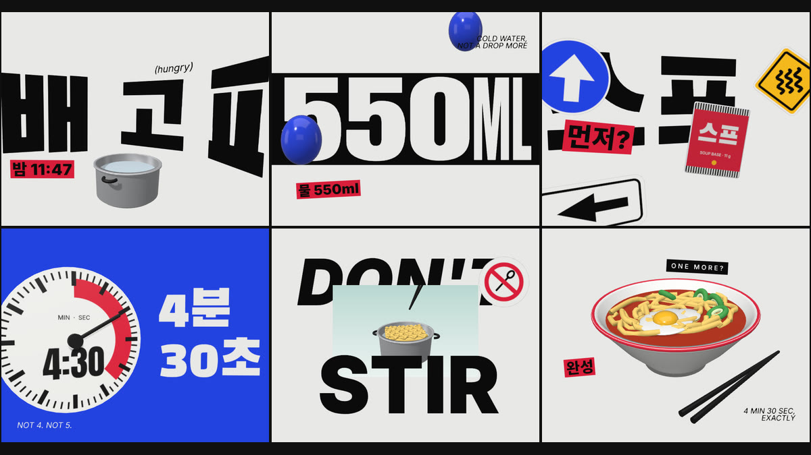
주제 하나를 주면 비트마다 컷이 바뀌는 키네틱 타이포그래피 콜라주 영상을 만듭니다. 건물만 한 검은 글자(한글 · 라틴)가 3D 공간에 서 있고 카메라가 그 사이를 휙 지나가며, 3D 오브젝트가 글자 앞뒤로 구르고, 스티커처럼 오려 낸 표지판과 줄무늬 그림이 겹칩니다. 종이색 바탕에 검정, 원색 포인트는 세 가지까지. 글자는 거리장으로 잘라 어떤 크기에서도 또렷하고, 소품은 주제에 맞춰 코드로 설계합니다. 반복 재생 라이브 페이지, 합성 비트, MP4를 냅니다.
예제 14.1초 · 20샷 · 128bpm · 소품 10개 · 사진 · 3D 에셋 0개
만든 출처: 만원만의 X 게시물 (@mosyenboy의 키네틱 타이포그래피, 애프터 이펙트 화면 녹화 14.4초)
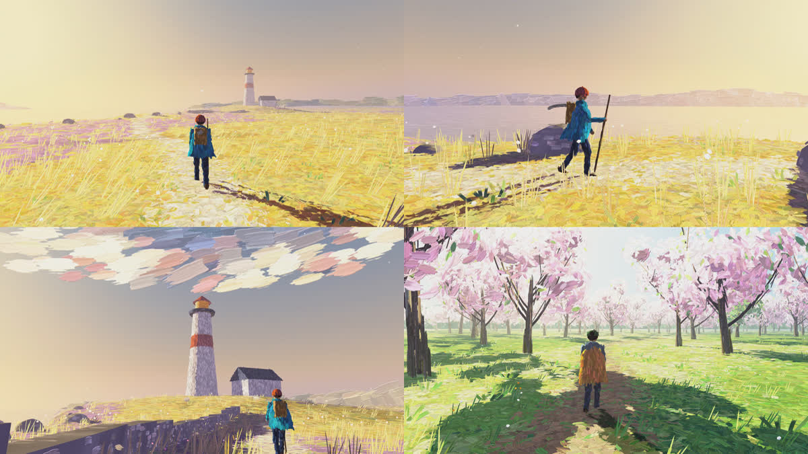
주제 하나를 주면 두꺼운 유화로 그려진 3D 세계와 그 안을 걷는 사람의 영상을 만듭니다. 풀잎 · 나뭇잎 · 돌 · 벽 · 물결 · 옷자락 하나하나가 세계에 고정된 붓 자국이라 시점이 움직여도 물감이 사물에 붙어 있고, 색은 사물마다 섞어 둔 세 가지(밝은 색 · 중간 색 · 그늘 색)에서 붓 자국마다 고릅니다. 해와 공기, 길과 땅, 세계를 이루는 것들, 걷는 사람과 샷을 주제마다 새로 설계하며, 모델 · 텍스처 없이 코드로만 만들고, W A S D로 직접 걸어 볼 수 있는 라이브 페이지와 1080p MP4를 냅니다.
예제 20초 · 6샷 · 붓 자국 약 83만 개 · 키트 8종 · 인물 캐스트 22포즈
만든 출처: Blendi의 X 게시물 (「손으로 그린」 게임, 프레임마다 붓 자국 약 150만 개) · Oil paint 프로젝트 (patch.gg, 코드 MIT © 2026 Patch)
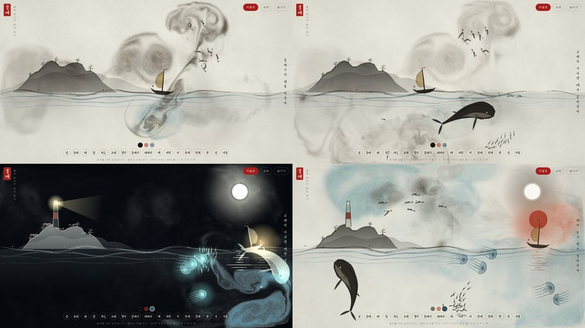
주제 하나를 주면, 빈 종이에 글자를 치는 대로 세계가 생기는 인터랙티브 수묵 페이지를 만듭니다. 글자는 붓이 있는 자리에 붓글씨로 쓰였다가 실시간 유체 시뮬레이션의 먹으로 풀리고, 그 글자가 뜻하는 것(섬 · 고래 · 갈매기 · 비 · 밤)이 되어 살아나 규칙에 따라 서로 영향을 주고받습니다. 끌면 먹이 저어지고, 글자와 사건마다 합성한 소리가 나며, 가만히 두면 혼자 연주합니다. 주제마다 글자 · 그림 · 규칙 · 공연을 새로 설계하고, 자동 검사를 거쳐 정적 페이지와 1080p MP4로 냅니다.
예제 17글자 · 규칙 19개 · 96초 · 라이브러리 · 이미지 · 소리 파일 0개
만든 출처: 歸藏(@op7418)의 X 게시물 (「墨生 · 字即世界」, 글자를 치면 먹 유체로 번지며 살아나는 수묵 페이지)
스킬 폴더를 프로젝트의 .claude/skills/에 복사하거나 심볼릭 링크로 연결합니다. 아래 명령은 canvas-film을 연결하는 예입니다. 연결한 뒤 만들 영상을 설명하면 에이전트가 맞는 스킬을 골라 씁니다. 에이전트에게 그 폴더의 SKILL.md를 직접 읽게 해도 됩니다.
git clone https://github.com/jungrok5/motion-skills
mkdir -p .claude/skills && ln -s "$PWD/motion-skills/canvas-film" .claude/skills/새 스킬은 대개 다른 프로젝트 레포에서 실제 작품을 만들며 다듬은 뒤 이 레포로 옮겨 옵니다. 폴더 구조, 출처 표기, LESSONS.md, 샘플 페이지를 만드는 순서는 CONTRIBUTING.md에 있습니다. 이 페이지의 카드 목록은 skills.json에서 만듭니다.